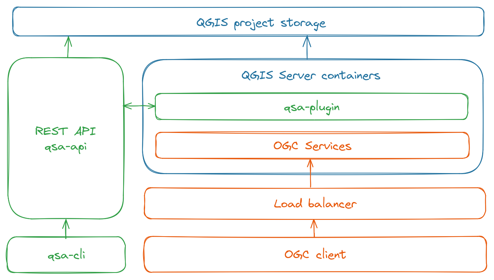

Welcome to QGIS Server Administration tool’s documentation.
QGIS Server is a map-server based on the QGIS core library and rendering engine which provides numerous classical services like WMS, WFS, WCS, WMTS and OGC API Features. While QGIS Desktop acts like a WYSIWYG tool for setting up projects, the need for a REST API is sometime necessary to configure and administrate QGIS Server: custom web client, cloud deployment, …. The aim of the QSA project is to provide such an API and tools.
Components:
- QSA REST API: Flask web server with a REST API for administrating QGIS Server
- QSA plugin: QGIS Server plugin for introspection
- QSA cli: Command line tool
Features:
- Create and manage QGIS projects stored on the filesystem or in PostgreSQL
- Create and update vector and raster layers : symbology, theme, …
- Inspect online QGIS Server instances
- Optional cache management with MapProxy

Roadmap:
- Add more documentation
- Add PostgreSQL support to store QGIS styles and QSA internals data
- Publish
qsa-clion PyPI - Publish a
qsa-apiDocker image on DockerHub - Publish
qsa-pluginon QGIS plugin repository
QSA REST API
qsa-api is a Flask WSGI server
providing a REST API for managing QGIS Server.
Features:
- Create and manage projects stored on the filesystem or in PostgreSQL
- Add and update layers based on multiple datasources (AWS S3 buckets, …)
- Configure symbology and themes based on simple symbols parameters
Optional features:
- Interaction with online QGIS Server instances (depends on QSA plugin)
- Cache management with MapProxy
QSA REST API : installation
From sources:
$ cd qsa-api
$ virtualenv --system-site-packages venv # system aware for pyqgis
$ . venv/bin/activate
(venv)$ pip install poetry
(venv)$ poetry install
Binary distributions:
TODO : provide a docker image on Dockerhub
QSA REST API : configuration
QSA web server can be configured thanks to the next environment variables:
| Mandatory | Environment variable | Description |
|---|---|---|
| Yes | QSA_QGISSERVER_URL | QGIS Server URL |
| Yes | QSA_QGISSERVER_PROJECTS_DIR | Storage location on the filesystem for QGIS projects/styles and QSA database |
| No | QSA_LOGLEVEL | Loglevel : DEBUG, INFO (default) or ERROR |
| No | QSA_QGISSERVER_PROJECTS_PSQL_SERVICE | PostgreSQL service to store QGIS projects |
| No | QSA_QGISSERVER_MONITORING_PORT | Connection port for qsa-plugin |
| No | QSA_MAPPROXY_PROJECTS_DIR | Storage location on the filesystem for MapProxy configuration files |
PostgreSQL support
When PostgreSQL support is enabled to store QGIS projects thanks to the
QSA_QGISSERVER_PROJECTS_PSQL_SERVICE environment variable, the directory
QSA_QGISSERVER_PROJECTS_DIR is only used to store the QSA SQLite database as
well as QGIS QML styles. In the future, the QSA database and QGIS styles will
also be stored in PostgreSQL when enabled.
The PostgreSQL support relies on a service defined in a PostgreSQL connection
service file.
For example with QSA_QGISSERVER_PROJECTS_PSQL_SERVICE=qsa_projects:
$ cat ~/.pg_service.conf
[qsa_projects]
host=localhost
port=5432
dbname=qsa_test
user=pblottiere
password=
A query string parameter can be used to specify a schema through the QSA API
(public is used by default).
QSA REST API : endpoints
PostgreSQL schema
When PostgreSQL support is enabled, a query string parameter schema may be
used to specify the schema in which the QGIS project is stored in the database
(public is used by default).
# call a specific endpoint using projects stored in PostgreSQL schema named `myschema`
$ curl "http://localhost/api/xxx/yyy?schema=myschema"
Project
A QSA project is defined by:
- a QGIS project
- a list of themes
- an internal SQLite database
- a MapProxy configuration file (if enabled)
| Method | URL | Description |
|---|---|---|
| GET | /api/projects | List projects |
| GET | /api/projects/{project} | List project’s metadata |
| POST | /api/projects/ | Create a project with name, author and schema (only used when PostgreSQL support is enabled) |
| DELETE | /api/projects/{project} | Remove a project |
Examples:
# create a project and store the QGIS project in PostgreSQL within `my_schema`
$ curl "http://localhost/api/projects/" \
-X POST \
-H 'Content-Type: application/json' \
-d '{
"name":"my_project",
"author":"pblottiere",
"schema":"my_schema"
}'
# get metadata about the project stored in PostgreSQL
$ curl "http://localhost/api/projects/my_project?schema=my_schema"
Layer
When a layer is added/removed to a QSA project, the corresponding QGIS project is updated. When MapProxy cache management is enabled, the configuration file is updated as well and the cache may be cleaned if necessary (for example when the current style is updated).
Several themes can be associated with a layer like in QGIS Desktop, but only
the current one is used when the STYLE parameter in OGC web services is
empty.
| Method | URL | Description |
|---|---|---|
| GET | /api/projects/{project}/layers | List layers in project |
| GET | /api/projects/{project}/layers/{layer} | List layer’s metadata |
| GET | /api/projects/{project}/layers/{layer}/map | WMS GetMap result with default parameters |
| GET | /api/projects/{project}/layers/{layer}/map/url | WMS GetMap URL with default parameters |
| POST | /api/projects/{project}/layers | Add layer to project with type (vector or raster), name, datasource, overview (build overview for rasters on S3) and crs (optional) |
| POST | /api/projects/{project}/layers/{layer}/style | Add/Update layer’s style with name (style name) and current (true or false) |
| DELETE | /api/projects/{project}/layers/{layer} | Remove layer from project |
Example:
# Add a FlatGeobuf vector layer in project `my_project`
$ curl "http://localhost/api/projects/my_project/layers" \
-X POST \
-H 'Content-Type: application/json' \
-d '{
"crs": 4326,
"name":"my_layer",
"type":"vector",
"datasource":"/vsis3/my-storage/vector/my_layer.fgb",
}'
Symbology
Vector layers rendering can be configured with several kinds of symbols
according to the geometry type. The symbol selector
in QGIS is very dense but for now, only Marker, Line and Fill simple symbols
are supported. The /api/symbology endpoint allows to dynamically retrieve the
corresponding parameters depending on QGIS Server version.
| Method | URL | Description |
|---|---|---|
| GET | /api/symbology/vector/point/single_symbol/marker/properties | Marker simple symbol properties |
| GET | /api/symbology/vector/line/single_symbol/line/properties | Line simple symbol properties |
| GET | /api/symbology/vector/polygon/single_symbol/fill/properties | Polygon simple symbol properties |
| GET | /api/symbology/vector/rendering/properties | Vector layer rendering properties |
| GET | /api/symbology/raster/singlebandgray/properties | Single band gray properties |
| GET | /api/symbology/raster/multibandcolor/properties | Multi band color properties |
| GET | /api/symbology/raster/rendering/properties | Raster layer rendering properties |
Examples:
# Return single symbol properties for polygon layers
$ curl "http://localhost:5000/api/symbology/vector/polygon/single_symbol/fill/properties" | jq
{
"border_width_map_unit_scale": "3x:0,0,0,0,0,0",
"color": "0,0,255,255",
"joinstyle": "bevel",
"offset": "0,0",
"offset_map_unit_scale": "3x:0,0,0,0,0,0",
"offset_unit": "MM",
"outline_color": "35,35,35,255",
"outline_style": "solid (no, solid, dash, dot, dash dot, dash dot dot)",
"outline_width": "0.26",
"outline_width_unit": "MM",
"style": "solid"
}
# Return multi band gray properties for raster layers
$ curl "http://localhost:5000/api/symbology/raster/multibandcolor/properties" | jq
{
"blue": {
"band": 3,
"min": 0.0,
"max": 1.0
},
"green": {
"band": 2,
"min": 0.0,
"max": 1.0
},
"red": {
"band": 1,
"min": 0.0,
"max": 1.0
}
"contrast_enhancement": {
"algorithm": "StretchToMinimumMaximum (StretchToMinimumMaximum, NoEnhancement)",
"limits_min_max": "MinMax (MinMax, UserDefined)"
}
}
Style
A QSA style may be used through the STYLE OGC web services parameter to
specify the rendering for a specific layer. Default styles may be defined and
automatically used when a vector layer is added to a QSA project.
| Method | URL | Description |
|---|---|---|
| GET | /api/projects/{project}/styles | List styles in project |
| GET | /api/projects/{project}/styles/default | List default styles in project |
| GET | /api/projects/{project}/styles/{style} | List style’s metadata |
| POST | /api/projects/{project}/styles/{style} | Add style to project. See Vector style and Raster style for more information. |
| POST | /api/projects/{project}/styles/default | Set a default layer’s style. See Vector style and Raster style for more information. |
| DELETE | /api/projects/{project}/styles/{style} | Remove style from project |
Vector style
For vector layers, a style can be defined with the parameters listed below:
type:vectorname: the name of the stylerendering: rendering parameters (onlyopacityis supported for now)symbology: dictionary withtype(onlysingle_symbolis supported for now),symbolandproperties
Example:
# Add a style for point geometry vector layers
$ curl "http://localhost:5000/api/projects/my_project/styles" \
-X POST \
-H 'Content-Type: application/json' \
-d '{
"type": "vector",
"name": "my_marker_style",
"rendering": {
"opacity": 100.
},
"symbology": {
"type": "single_symbol",
"symbol": "marker",
"properties": {
"color": "#112233"
}
}
}'
To set a default style for a specific geometry, the parameters listed below are available:
name: the name of the style to use by defaultgeometry: the geometry for which the style needs to be applied
Raster style
For raster layers, a style can be defined with the parameters listed below:
type:rastername: the name of the stylerendering: rendering parameterssymbology: dictionary withtype(onlysinglebandgrayandmultibandcolorare supported for now) andproperties
Example:
# Add a style for multiband raster
$ curl "http://localhost:5000/api/projects/my_project/styles" \
-X POST \
-H 'Content-Type: application/json' \
-d '{
"type": "raster",
"name": "my_multiband_style",
"rendering": {
"saturation": 3,
"brightness": -148,
"contrast": 42,
"gamma": 4.
},
"symbology": {
"type": "multibandcolor",
"properties": {
"red": {
"band": 1
},
"green": {
"band": 2
},
"blue": {
"band": 3
}
}
}
}'
Instances
When qsa-plugin is installed, an /api/instances endpoint is available to
retrieve information about QGIS Server underlying instances.
| Method | URL | Description |
|---|---|---|
| GET | /api/instances | List online QGIS Server instances |
| GET | /api/instances/{instance} | List QGIS Server instance metadata |
| GET | /api/instances/{instance}/logs | Return logs of QGIS Server instance |
| GET | /api/instances/{instance}/stats | Return stats of QGIS Server instance |
QSA plugin
Python QGIS server plugin which starts a dedicated thread with a TCP autoregistering client.
Features:
- Return metadata, logs, … about QGIS Server without interfering with the rendering loop
- TODO : Influence the QGIS Server behavior through communication with the main thread
QSA plugin : installation
Installation of QGIS Server’s plugins is documented in the official QGIS Server Guide.
QSA plugin : configuration
The QSA plugin can be configured thanks to the next environment variables:
| Mandatory | Environment variable | Description |
|---|---|---|
| Yes | QSA_HOST | QSA REST API host |
| Yes | QSA_PORT | QSA REST API port |
QSA plugin : usage
The QSA plugin starts a TCP socket and tries to connect to the QSA REST API server every 5 seconds. The next messages are written in QGIS Server logs during the connection phase:
Try to connect...
Try to connect...
Try to connect...
Connected with QSA server
As soon as the plugin is connected to the QSA Server, you don’t need to worry about anything else.
QSA cli
Command line application dedicated to manage QGIS Server instances through the QSA REST API.
QSA cli : installation
From sources:
$ cd qsa-cli
$ virtualenv venv
$ . venv/bin/activate
(venv)$ pip install poetry
(venv)$ poetry install
Binary distributions:
TODO : provide a package on PyPI
QSA cli : configuration
The QSA cli tool can be configured thanks to the next environment variable:
| Mandatory | Environment variable | Description |
|---|---|---|
| Yes | QSA_SERVER_URL | QSA REST API server URL |
QSA cli : commands
Command’s names are inspired by Docker:
$ qsa --help
Usage: qsa [OPTIONS] COMMAND [ARGS]...
Options:
--help Show this message and exit.
Commands:
inspect Returns metadata about a specific QGIS Server instance
logs Returns logs of a specific QGIS Server instance
ps List QGIS Server instances
stats Returns stats of QGIS Server instances
Examples:
$ qsa ps
INSTANCE ID IP STATUS
------------- ---------- -----------------------
336a0fc1 172.20.0.2 Binded 1315 seconds ago
13097056 172.20.0.4 Binded 1315 seconds ago
a523ee7a 172.20.0.5 Binded 1315 seconds ago
d11e11a4 172.20.0.6 Binded 1315 seconds ago
Sandbox
The sandbox directory provides a plug-and-play Docker environment to discover
QSA tools with PostgreSQL support enabled.
First, a QSA REST API server is set up with 4 QGIS Server instances:
$ cd sandbox
$ docker-compose up --scale qgisserver=4 -d
$ docker ps
CONTAINER ID IMAGE COMMAND CREATED STATUS PORTS NAMES
d2eaf6bdfae4 pblottiere/qsa "qsa" 2 hours ago Up 9 seconds 0.0.0.0:5000->5000/tcp, :::5000->5000/tcp sandbox-qsa-1
b47085d9ad65 postgres:14-alpine "docker-entrypoint.s…" 5 days ago Up 9 seconds 0.0.0.0:5433->5432/tcp, :::5433->5432/tcp sandbox-postgres-1
77fa87641b42 opengisch/qgis-server:3.30-jammy "/bin/sh -c /usr/loc…" 2 hours ago Up 9 seconds 80/tcp, 9993/tcp sandbox-qgisserver-6
093346c82ea8 opengisch/qgis-server:3.30-jammy "/bin/sh -c /usr/loc…" 2 hours ago Up 9 seconds 80/tcp, 9993/tcp sandbox-qgisserver-8
afd95ccaef9e opengisch/qgis-server:3.30-jammy "/bin/sh -c /usr/loc…" 2 hours ago Up 9 seconds 80/tcp, 9993/tcp sandbox-qgisserver-7
0b13f3d867c5 opengisch/qgis-server:3.30-jammy "/bin/sh -c /usr/loc…" 2 hours ago Up 8 seconds 80/tcp, 9993/tcp sandbox-qgisserver-1
Sandbox : introspection
qsa-cli allows to inspect online QGIS Server instances registered to
qsa-api server, but it’s also possible to use the REST API.
List online instances
To list these instances with qsa-cli:
$ export QSA_SERVER_URL=http://localhost:5000
$ qsa ps
INSTANCE ID IP STATUS
------------- ---------- -----------------------
6773ca08 172.20.0.2 Binded 1096 seconds ago
4464d3c5 172.20.0.4 Binded 1096 seconds ago
012083b9 172.20.0.5 Binded 1096 seconds ago
c0047e66 172.20.0.6 Binded 1096 seconds ago
Or with the API:
$ curl http://localhost:5000/api/instances/ | jq
{
"servers": [
{
"binded": 1217,
"id": "6773ca08",
"ip": "172.20.0.2"
},
{
"binded": 1217,
"id": "4464d3c5",
"ip": "172.20.0.4"
},
{
"binded": 1217,
"id": "012083b9",
"ip": "172.20.0.5"
},
{
"binded": 1217,
"id": "c0047e66",
"ip": "172.20.0.6"
}
]
}
Get metadata
To get some metadata about a specific QGIS Server instance with qsa-cli:
$ qsa inspect 4464d3c5
{
"cache": {
"projects": []
},
"plugins": [
"qsa"
],
"providers": [
"OGC API - Features data provider",
"WFS data provider",
"ArcGIS Feature Service data provider",
"ArcGIS Map Service data provider",
"COPC point cloud data provider",
"Delimited text data provider",
"EPT point cloud data provider",
"GDAL data provider",
"GPS eXchange format provider",
"SAP HANA spatial data provider",
"MDAL provider",
"Memory provider",
"Mesh memory provider",
"MSSQL spatial data provider",
"OGR data provider",
"PDAL point cloud data provider",
"PostgreSQL/PostGIS data provider",
"Postgres raster provider",
"SpatiaLite data provider",
"Vector tile provider",
"Virtual layer data provider",
"Virtual Raster data provider",
"OGC Web Coverage Service version 1.0/1.1 data provider",
"OGC Web Map Service version 1.3 data provider",
""
],
"versions": {
"gdal": "3.4.1",
"python": "3.10.6",
"qgis": "3.30.3",
"qt": "5.15.3"
}
}
Or with the API curl http://localhost:5000/api/instances/4464d3c5.
Fetch the log
A bad request to QGIS Server to have something in the log:
$ curl http://172.20.0.4/ogc/
<?xml version="1.0" encoding="UTF-8"?>
<ServerException>Project file error. For OWS services: please provide a SERVICE and a MAP parameter pointing to a valid QGIS project file</ServerException>
Then to fetch the log of the corresponding QGIS Server instance with qsa-cli:
$ qsa logs 4464d3c5
Server plugin qsa loaded!
Server python plugins loaded
******************** New request ***************
Request URL: http://172.20.0.4/ogc/?map=/io/data//.qgs
Environment:
------------------------------------------------
SERVER_NAME: 172.20.0.4
REQUEST_URI: /ogc/
SCRIPT_NAME: /qgis/qgis_mapserv.fcgi
HTTPS:
REMOTE_ADDR: 172.20.0.1
SERVER_PORT: 80
QUERY_STRING: map=/io/data//.qgs
REMOTE_USER:
CONTENT_TYPE:
REQUEST_METHOD: GET
SERVER_PROTOCOL: HTTP/1.1
MAP:/io/data//.qgs
Error when loading project file '/io/data//.qgs': Unable to open /io/data//.qgs
Trying URL path: '/ogc/' for '/'
Trying URL path: '/ogc/' for '/wfs3'
<?xml version="1.0" encoding="UTF-8"?>
<ServerException>Project file error. For OWS services: please provide a SERVICE and a MAP parameter pointing to a valid QGIS project file</ServerException>
Request finished in 3 ms
Display stats
To display stats for all QGIS Server online instances:
$ qsa stats
INSTANCE ID COUNT TIME SERVICE REQUEST PROJECT
------------- ------- ---------- --------- --------- ---------
4464d3c5 1
6773ca08 0
012083b9 0
c0047e66 0
Sandbox : projects
Create and delete projects in PostgreSQL
First we create a schema to store QGIS projects:
$ psql -h localhost -p 5433 -U qsa qsa -c "create schema my_schema"
CREATE SCHEMA
Then we create a QSA project:
$ curl "http://localhost:5000/api/projects/" \
-X POST \
-H 'Content-Type: application/json' \
-d '{
"name":"my_project",
"author":"pblottiere",
"schema":"my_schema"
}'
true
In this case, a directory has been created on the filesystem with the internal QSA database:
$ file projects/qsa/my_schema_my_project/qsa.db
SQLite 3.x database
And a QGIS project has been created in PostgreSQL:
$ psql -h localhost -p 5433 -U qsa qsa -c "select name from my_schema.qgis_projects"
name
------------
my_project
(1 row)
To create another project in public schema and list available projects thanks
to the QSA API:
$ curl "http://localhost:5000/api/projects/" \
-X POST \
-H 'Content-Type: application/json' \
-d '{
"name":"my_project_2",
"author":"pblottiere"
}'
true
$ curl "http://localhost:5000/api/projects/"
["my_project_2"]
$ curl "http://localhost:5000/api/projects/?schema=my_schema"
["my_project"]
To delete a project:
$ curl -X DELETE "http://localhost:5000/api/projects/my_project_2"
true
$ curl "http://localhost:5000/api/projects/"
[]
To list project metadata:
$ curl http://localhost:5000/api/projects/my_project?schema=my_schema | jq
{
"author": "pblottiere",
"creation_datetime": "2024-03-14T20:17:45",
"crs": "",
"schema": "my_schema",
"storage": "postgresql"
}
Sandbox : vector layers
Layers are based on the data.gpkg file mounted in the Docker containers.
Add layers
To add a polygon layer from a geopackage to a project:
$ curl "http://localhost:5000/api/projects/my_project/layers?schema=my_schema" \
-X POST \
-H 'Content-Type: application/json' \
-d '{
"crs": 4326,
"datasource":"/data.gpkg|layername=polygons",
"name":"polygons",
"type":"vector"
}'
true
And a line layer from PostGIS:
# copy geopackage table to PostGIS
$ ogr2ogr -f PostgreSQL "PG:dbname=qsa password=qsa user=qsa port=5433 host=localhost" data.gpkg lines
# add a line layer based on the PostGIS table
$ curl "http://localhost:5000/api/projects/my_project/layers?schema=my_schema" \
-X POST \
-H 'Content-Type: application/json' \
-d '{
"crs": 4326,
"datasource":"service=qsa table=\"public\".\"lines\" (geom)",
"name":"lines",
"type":"vector"
}'
true
List layers and get metadata
$ curl "http://localhost:5000/api/projects/my_project/layers?schema=my_schema"
["lines","polygons"]
$ curl "http://localhost:5000/api/projects/my_project/layers/lines?schema=my_schema" | jq
{
"bbox": "-117.62319839219100004 23.20820580488510032, -82.32264950769270229 46.18290982947510059",
"crs": "EPSG:4326",
"current_style": "default",
"geometry": "MultiLineString",
"name": "lines",
"source": "service='qsa' key='fid' checkPrimaryKeyUnicity='1' table=\"public\".\"lines\" (geom)",
"styles": [
"default"
],
"type": "vector",
"valid": true
}
Map sample
To execute a WMS GetMap request with basic parameters:
$ curl "http://localhost:5000/api/projects/my_project/layers/polygons/map?schema=my_schema" --output map.png

Delete layers
$ curl -X DELETE "http://localhost:5000/api/projects/my_project/layers/lines?schema=my_schema"
true
$ curl "http://localhost:5000/api/projects/my_project/layers?schema=my_schema"
["polygons"]
Sandbox : vector styles
Add style to project
To list available properties for the polygon single symbol renderer:
$ curl "http://localhost:5000/api/symbology/vector/polygon/single_symbol/fill/properties" | jq
{
"border_width_map_unit_scale": "3x:0,0,0,0,0,0",
"color": "0,0,255,255",
"joinstyle": "bevel",
"offset": "0,0",
"offset_map_unit_scale": "3x:0,0,0,0,0,0",
"offset_unit": "MM",
"outline_color": "35,35,35,255",
"outline_style": "solid (no, solid, dash, dot, dash dot, dash dot dot)",
"outline_width": "0.26",
"outline_width_unit": "MM",
"style": "solid"
}
To add a style for a polygon layer:
$ curl "http://localhost:5000/api/projects/my_project/styles?schema=my_schema" \
-X POST \
-H 'Content-Type: application/json' \
-d '{
"type": "vector",
"name": "my_fill_style",
"symbology": {
"type": "single_symbol",
"symbol": "fill",
"properties": {
"color": "#00BBBB",
"style": "cross",
"outline_width": 0.16,
"outline_color": "#002222"
}
},
"rendering": {}
}'
true
To list styles for a specific project:
$ curl "http://localhost:5000/api/projects/my_project/styles?schema=my_schema"
["my_fill_style"]
Apply style to layer
To apply a specific style to a layer:
$ curl "http://localhost:5000/api/projects/my_project/layers/polygons/style?schema=my_schema" \
-X POST \
-H 'Content-Type: application/json' \
-d '{
"name":"my_fill_style",
"current":true
}'
true
The layer rendering has changed now:
$ curl "http://localhost:5000/api/projects/my_project/layers/polygons/map?schema=my_schema" --output map.png

Sandbox : raster layers
Layer is based on the landsat_4326.tif file mounted in the Docker containers.
Add layers
To add a raster layer to a project:
$ curl "http://localhost:5000/api/projects/my_project/layers?schema=my_schema" \
-X POST \
-H 'Content-Type: application/json' \
-d '{
"datasource":"/dem.tif",
"name":"dem",
"type":"raster"
}'
true
List layers and get metadata
$ curl "http://localhost:5000/api/projects/my_project/layers?schema=my_schema"
["polygons","dem"]
Map sample
To execute a WMS GetMap request with basic parameters:
$ curl "http://localhost:5000/api/projects/my_project/layers/dem/map?schema=my_schema" --output map.png
Sandbox : raster styles
Add style to project
To add a style for a multiband raster layer:
$ curl "http://localhost:5000/api/projects/my_project/styles?schema=my_schema" \
-X POST \
-H 'Content-Type: application/json' \
-d '{
"type": "raster",
"name": "my_singlebandgray_style",
"symbology": {
"type": "singlebandgray",
"properties": {
"gray_band": 1,
"contrast_enhancement": {
"algorithm": "StretchToMinimumMaximum",
"limits_min_max": "MinMax"
}
}
},
"rendering": {
"brightness": 255,
"gamma": 0.1,
"contrast": 100
}
}'
true
To list styles for a specific project:
$ curl "http://localhost:5000/api/projects/my_project/styles?schema=my_schema"
["my_singlebandgray_style"]
Apply style to layer
To apply a specific style to a layer:
$ curl "http://localhost:5000/api/projects/my_project/layers/dem/style?schema=my_schema" \
-X POST \
-H 'Content-Type: application/json' \
-d '{
"name":"my_singlebandgray_style",
"current":true
}'
true
The layer rendering has changed now:
$ curl "http://localhost:5000/api/projects/my_project/layers/dem/map?schema=my_schema" --output map.png

Developers
Documentation:
$ mdbook build docs
Unit tests:
$ cat ~/.pg_service.conf
[qsa_test]
host=localhost
port=5432
dbname=qsa_test
user=myusername
password=
$ createdb qsa_test
$ cd qsa-api
$ pytest -sv test/api.py
Integration tests:
$ cd sandbox
$ docker-compose up -d
$ cd ../qsa-api
$ QSA_GEOTIFF="/landsat_4326.tif" QSA_GPKG="/data.gpkg" QSA_HOST=127.0.01 QSA_PORT=5000 pytest -sv tests/api.py
Funders